Urban Fabric Designed for Diversity
How the Structure of Great European Cities Influences Attitudes and Behavior
Urban Fabric Designed for Diversity
- Intro: Copernicus Urban Atlas
- Intro: Jane Jacobs’ urban theory
- Paper 1: Urban fabric and attitudes toward foreigners
- Paper 2: Urban fabric and sympathy for the far right
- Paper 3: Predicting human mobility with land cover data
- Final thoughts
Copernicus Urban Atlas
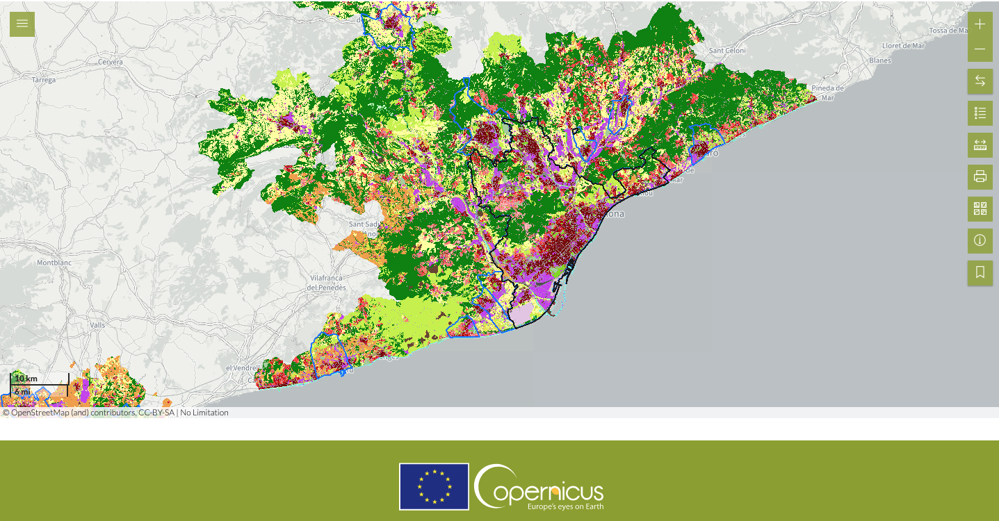(Dis)continuous Urban Fabric
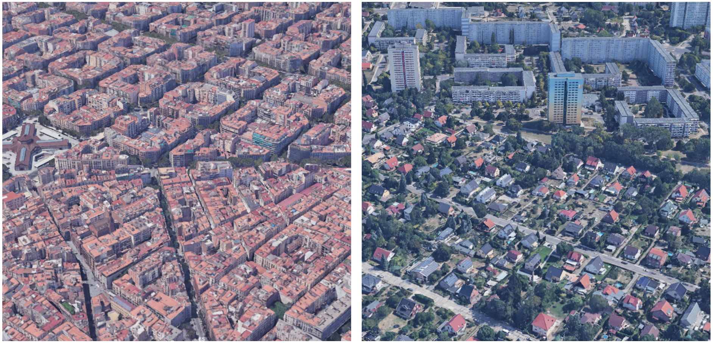 Continuous urban fabric in Barcelona (left) and discontinuous urban fabric in Berlin (right).
(Dis)continuous Urban Fabric
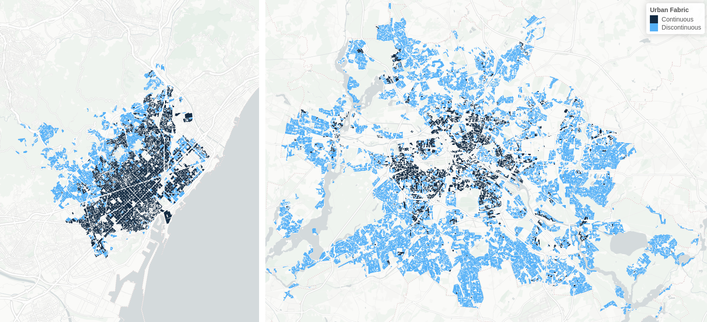 Urban fabric of Barcelona (left) and Berlin (right).
20th Century Trends in Urban Design
Philosophical and hygienic concerns about crowded cities
Two modernist urban design trends rise in popularity:
- Expand the city horizontally (Howard’s “Garden City”)
- Expand the city vertically (Le Corbusier)
Either way: “grass, grass, grass” per Jane Jacobs
Jacobs’ Urban Theory
- Studied the impact of so-called urban renewal
- Found that neighborhoods lost their “vitality”
- Modern designs have less sidewalk activity
- Less interaction between neighbors, more crime
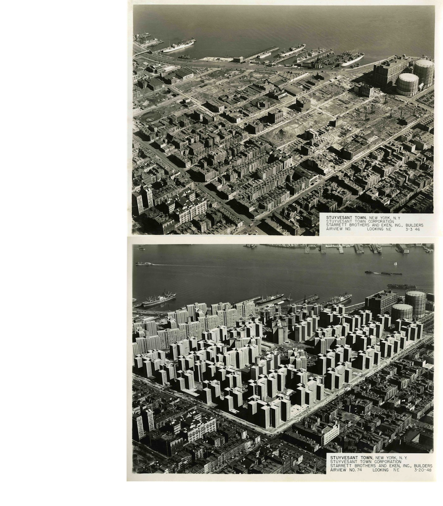
Jacobs’ Urban Theory
- More activity and interaction in compact, traditional designs than in open, modern designs
- Her claims have been echoed by other urban theorists and empirical work
- The design trends she contrasts are very similar to the distinction Copernicus makes between continuous and discontinuous urban fabric
Can Urban Fabric Encourage Tolerance?
Published in Cities in 2022
Paper 1: Contact Theory
- Allport’s contact hypothesis (1954)
- Contact between in-groups and out-groups reduces prejudice
- Four conditions: equal status, common goals, cooperative environment, societal support
- Very large body of empirical evidence confirms the core idea and finds that the conditions are not necessary
Paper 1: Contact Theory
- Field has moved on to extensions of the theory
- Extended contact: the friends of those who made contact
- Vicarious contact: witnessing contact made by other people
- Mere exposure: even interaction may not be necessary
- Exciting implications at the scale of a city
Paper 1: Hypotheses
H1: The more continuous urban fabric in a city, the more likely individual residents will agree that foreigners are good for the city.
H2: The larger the migrant population in a city, the stronger the positive correlation between urban fabric continuity and positive attitudes toward foreigners.
Paper 1: Context & Data
- 22 cities in Southern, Western, and Eastern Europe
- City-level data from Eurostat including continuous urban fabric variable
- Individual-level data from “Quality of Life in European Cities 2015” survey
- DV question: agree/disagree that “the presence of foreigners is good for [city name]”
- Controls: age, gender, nationality, education, occupation, economic variables, region in Europe
Paper 1: Models
- Multilevel logistic regressions
- Estimated with lme4 R package
Paper 1: Findings
Paper 1: Takeaways
- It does seem like urban fabric influences attitudes toward out-groups
- I make a theoretical argument about the underlying mechanism, but the test of that mechanism fails
- 22 cities is fewer than ideal
Does Urban Design Drive Sympathy for the Far Right?
Published in City, Culture and Society in 2023
Paper 2: The Far Right in Europe
- Far-right parties are now mainstream
- Xenophobia and opposition to immigration are of “tremendous importance” to their ideology and rhetoric (Mudde, 2007)
- They believe that “inequalities are natural and outside of the purview of the state” (Bobbio, 1996)
- If urban design influences prejudice and tolerance, it may influence sympathy for the far right
Paper 2: Hypotheses
H1: Residents of cities with more continuous urban fabric will be less likely to have sympathy for far-right parties.
H2: The negative relationship between continuous urban fabric and far-right sympathy will be weaker in cities with high levels of residential segregation.
Paper 2: Context & Data
- 73 cities in Spain
- 12 CIS monthly barometer surveys (Jan. 2019 to Mar. 2020)
- City-level data from Eurostat including continuous urban fabric variable
- City-level segregation index calculated using D4I data
- Controls: age, gender, religion, education level, and occupation
Paper 2: Analysis
- Coded so that: 0 = no sympathy for the far right (Vox), while 1-10 = sympathy for the far right
- Bayesian multilevel logistic regressions
- Estimated with brms and rstanarm R packages
Paper 2: Findings
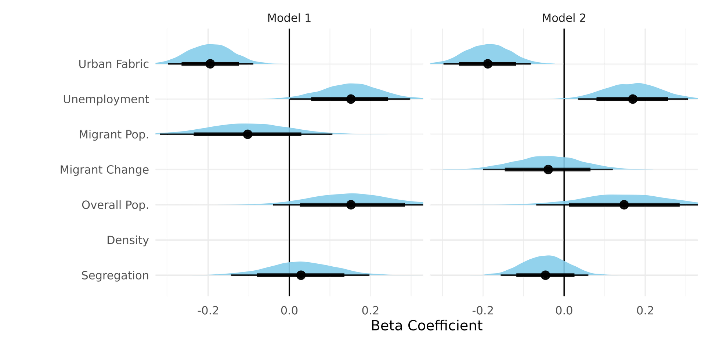Paper 2: Findings

Paper 2: Findings

Paper 2: Coding Comparision
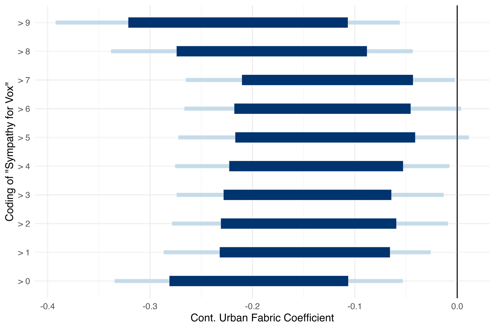Paper 2: Takeaways
- Strong evidence that continuous urban fabric is associated with inclusive attitudes
- Using segregation data, we now have evidence that the urban theory plus contact theory mechanism explains this relationship
- But I promised that urban fabric influences attitudes and behavior…
Improving the Gravity Model of Human Mobility with Land Use Data
Paper 3: The Gravity Model
- Elegant model of the flow of people, goods, capital, etc. (Zipf, 1946)
- Popular thanks to its simplicity and efficiency
- Many recent attempts to improve on it
Paper 3: “Deep Gravity”
- Simini et al. (2021) use “land use, road network features, transportation, food, health, education, and retail facilities”
- Deep neural networks
- Using points of interest makes it difficult to replicate, may introduce inconsistencies
- Less accurate in cities
Paper 3: Objectives
- Model that’s easy to implement and uses common, consistent data
- Predicts the daily flow of people between urban districts
- Tested using real world research scenarios
Paper 3: Incorporating Copernicus
- Copernicus Urban Atlas covers 788 urban areas
- Data is consistent
- Relationships between many land cover types and mobility is unclear
Paper 3: The Models
Gravity Model
- OLS regression with log of origin and destination population, distance
Land Use Model
- Adds proportion of each land use class in origin/dest.
- XGBoost machine learning regression
Trained on data from 42 million Spanish mobiles in Nov. 2019
Paper 3: Testing in the Lab
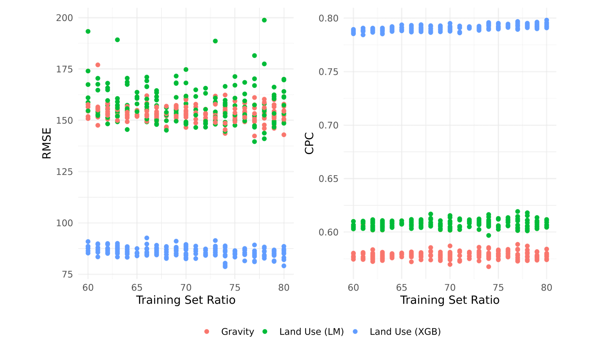Paper 3: Predicting the Future
Paper 3: Predicting the Future
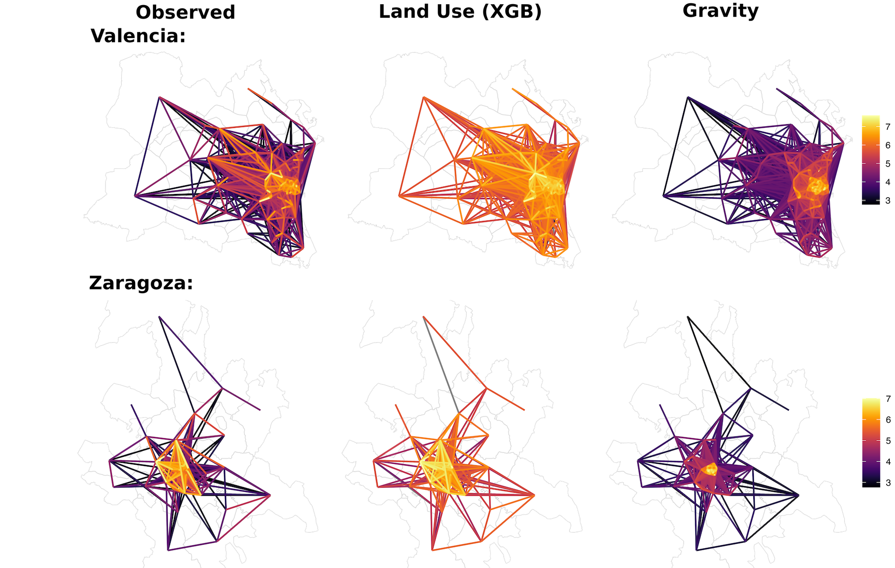Paper 3: Unknown Cities
Paper 3: Unknown Cities
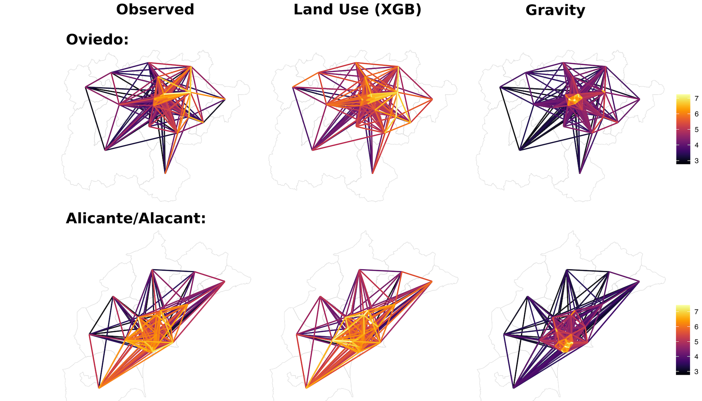Paper 3: Many Cities, Little Funding
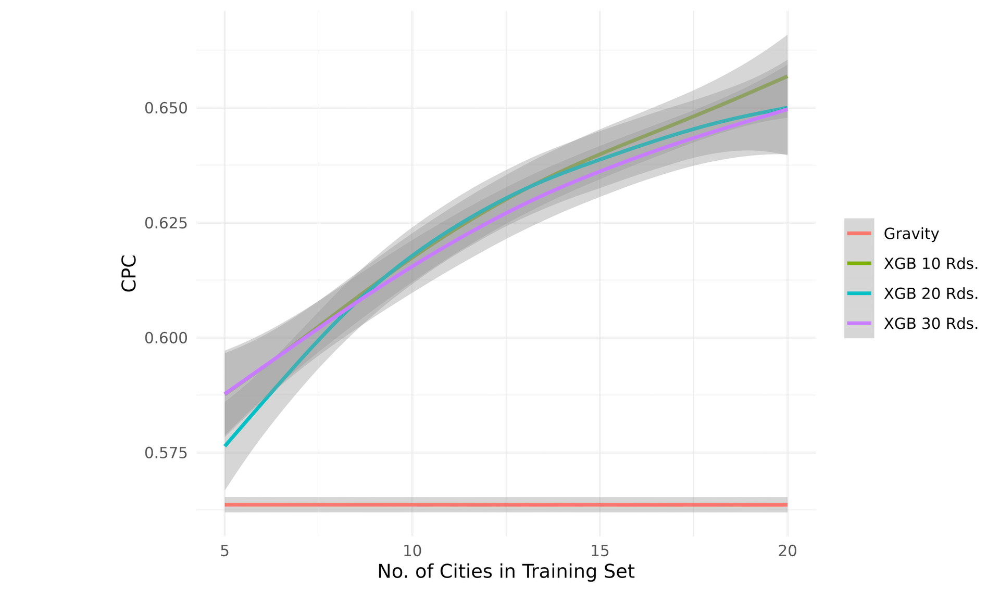Paper 3: Takeaways
- Land use model is fast and accurate when modelling this type of human mobility
- Gravity model is popular across a wide range of applications
- Copernicus data shows its utility once again
Final Thoughts
Social Scientists
- Geography matters – Copernicus data may help
Policymakers
- Small design changes possible; be aware of vulnerability
City Dwellers
- Think twice about new, discontinuous developments